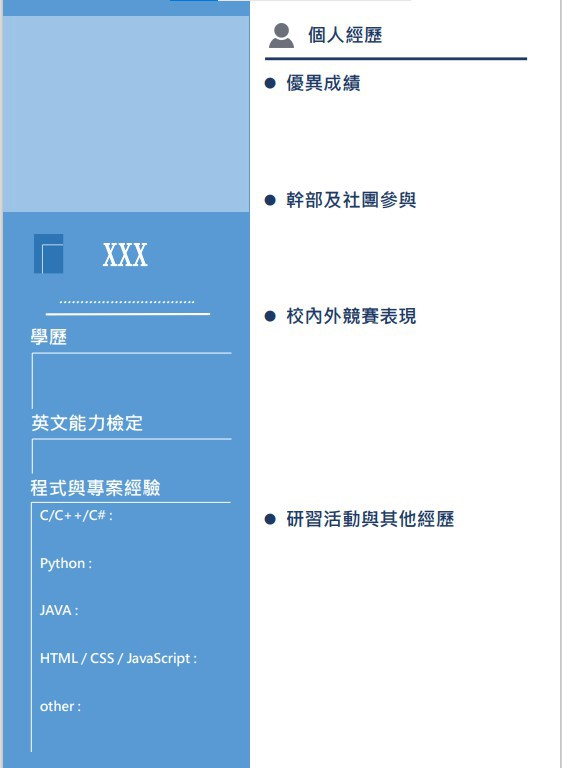
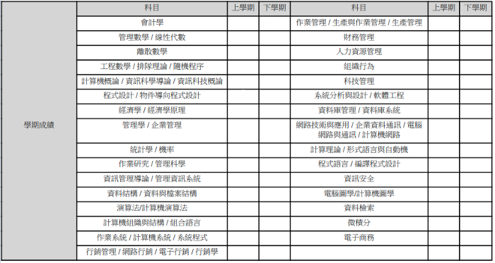
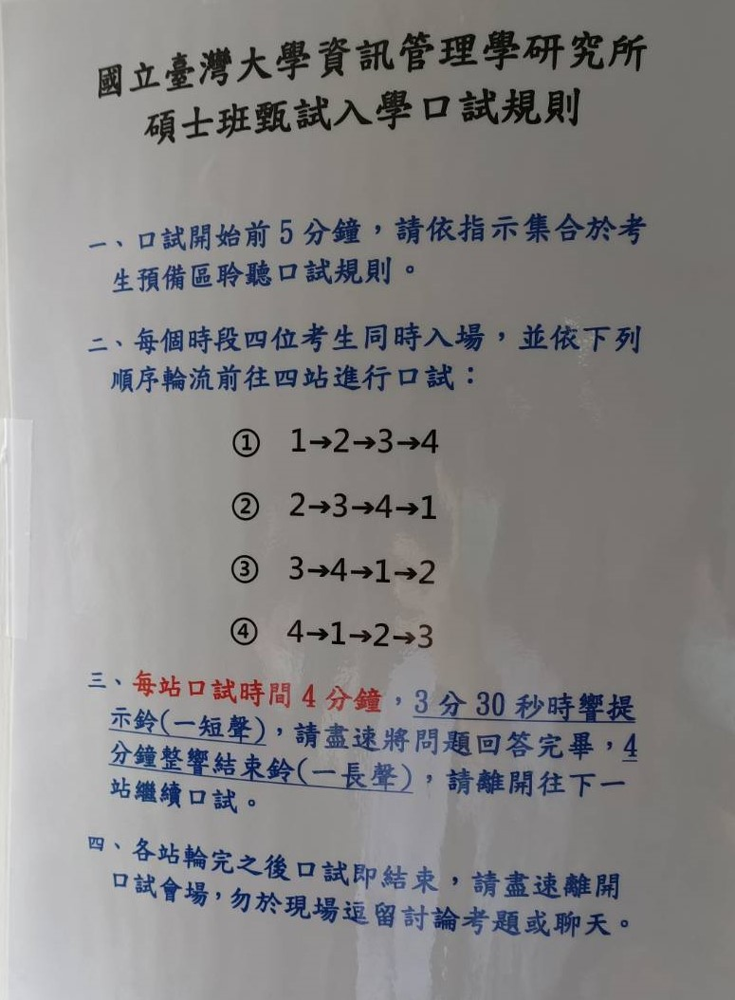

本文撰寫於2021年1月7日
前言
小弟有幸成功上岸找到教授，想把從大概8月到11月的這段歷程記錄下來。在整個研究所推甄的期間，不像高中升大學一樣，學校有很多資源資訊、有很多同學可以問，加上我算是跨考生，推甄也常從網路得到有用資訊，想把資訊分享給同是即將面對推甄的迷途羔羊們XD 希望也可以讓大家少走點冤枉路。
這整篇文章會包含全部推甄的過程:
- 背景
- 錄取結果
- 書審準備
- 各校所準備心得(含面試)
- 放榜後的找教授&實驗室
背景
- 113資財系(資管組)，班排19% 系排12%
- 書卷獎 x 1，校外獎學金 x 1
- 全國性資訊競賽 第二名、人氣獎
- 多益800多，擔任過英文課程助教
- 系學會會長，產學合作 x 1
- 畢業專題與RL相關
錄取結果
| 台大 | 資工所 | 備65 |
| 資工所(AI) | 備13 | |
| 網媒所 | 未錄取 | |
| 資管所 | 備6(V) | |
| 交大 | 資訊聯招 | 網工備61(V)/多工備69(V)/資科工備103 |
| 數據所 | 備1(V) | |
| 資管所 | 正取 | |
| 清大 | 資工甲組 | 未錄取 |
| 資應所 | 備1(V) |
小弟最後去了清大資應所，跟找教授滿有關係的，後面會講，以結果論來說，本校+本系生有很大優勢，但書審或面試的好表現可以在差不多的人群中領先一點，不過成績/豐富的經歷還是最重要的，一定要認清自己在推甄制度下有的優勢跟劣勢，善用長處彌補缺點。不過我的錄取結果也不是到非常好，所以心得可以參考就好~
書審準備
這部分應該算是可以提前準備的，我大概7月開始慢慢整理資料(獎狀、經歷、寫過的大大小小專題)，不過建議可以寫個大概就好，我一開始寫的版本太過仔細，但因為不同校所有自己的規定，導致最後報名的時候改了超多版本… 這裡就寫一些準備的大方向，各校所的部分再寫特別注意的地方。
蒐集資料
比起直接卯起來做備審，這部分算是好起頭的地方，也可以順便檢視自己大學到底在幹嘛XD。成績單(如果三下成績已經出來)、在學證明、社團活動證明、獎懲紀錄等，這些大概都需要跑學校行政流程，能弄就弄一弄，成績單可以多印幾張；另外，獎狀、英檢等各種雜七雜八不管有沒有用都可以先掃描起來。專題我覺得是滿可以證明自己能力的一個項目，即使沒有獎狀，仍可以證明你有程式實作能力，不管是畢業專題或是課程大大小小專題都可以記錄，也將你有的競賽作品、產學或實習、社團經歷等都可以整理起來，其實這些零零總總加起來就可以成為”其他有利審查資料”這項了。
書審撰寫
整理完資料大概就知道自己有甚麼料了，若還有時間可以趕快抱佛腳考個英文/程式檢定或累積一些有用的經驗。在開始寫自傳讀書計畫前，我覺得可以花些時間真正理解自己未來想要做甚麼(包含對就業後的想像)，研究所會更加聚焦在某個特定領域，與其到時候投教授所好，不如趁現在了解自己，有興趣的領域就趕緊花時間去強化。
自傳
資工這類大家應該都知道，書審寫一堆矯情的教授與書審委員應該也不會特地看，建議就列點把自己的經歷、優點展現出來，清楚明瞭。我自己是有做出一頁的簡歷，再加上1~2頁簡短的自傳，自傳的部分稍微用文字描述你很有心得的東西(我是放畢業專題和產學)，可以把專業技術與概念寫出來。下圖是我自己做的一個簡歷模板，可以參考。

讀書計畫
這部分其實大家都大同小異，我認為這也不是備審的重點，我分為就讀動機以及學習計畫兩部分，加起來篇幅大概一頁就好，太冗長也不優。學習計畫的部分分為近程、中程、遠程，可以簡述大致上的目標，如果可以更明確更好(ex:修某堂特定課程、托福達到幾分)，相較於只說要加強專業能力來的更清楚。
其他有利資料
第三個要花點時間撰寫的就是其他資料，我自己將這部分分為：
- 專題(畢業專題、課程專題、競賽專題、Side project)
- 經歷(產學、實習或交換)
- 活動(營隊、社團、幹部、助教等)
- 技能(外語能力、程式能力)
- 附錄(獎狀證明)
如果非本校/非本系，成績又沒有很搶眼的同學，我覺得可以多花點時間著墨在這部份上。專題可以去描述系統架構，用到的API或其他技術等，試著去闡述自己的能力與專業，競賽類的成績也可以列出，應該滿加分的；經歷可以描述自己在實作方面上的能力，在產業上實際做出的作品更具有說服力；活動部分簡單條列式就好，除非有非常值得一提的；技能部分可以列出外語檢定成績，程式語言與對應實作過的project。
推薦信
這部分一直都很玄，有些人說不太重要，有些人覺得很重要，我自己是正常準備，沒有太看重也沒有隨便用，不過一定要盡早開始(大概在繳交期限提早一個月左右，教授也是需要時間幫很多人寫的啊)，提早詢問也可以降低被打槍的機率。通常都會要求2封推薦信(至多5封)，我總共找了三位教授，分別為我的畢業專題指導教授、電機系課程教授、大二比賽與產學的指導教授，有些人也會找實習的主管，如果有認識業界的大佬或是要申請的科系教授也不錯，總之對象就是尋找對自己大學有幫助也有影響的老師，信件詢問時有禮貌，老師應該也不至於會拒絕~
各校所準備心得(含面試)
台大資工所/台大網媒所
台大資工、人工智慧班、網媒比較單純，就是把書審準備好加上台大規定的個人資料表，台大沒有自傳這項，就是把自傳的內容融入到個人資料表中，簡明扼要就好。不過因為是第一個要繳交的學校，我的書審也比較陽春(清交後面有修了幾個比較詳細完整的版本)，非台大本校本系生，加上成績和經歷也沒有到特別突出，備到一個天荒地老，不過如果是外校本系生成績不錯的話應該也滿有機會~
台大資管所
書審
台大資管書審部分和資工差不多，不過比較特別的是資管要求把指定科目的成績列出來(如下圖)，所以有時間的話可以補一些他們重視的課程！

面試
以系上同學間的書審錄取標準來看，最主要應該還是看成績篩選進入面試。面試的部分我比較有把握，不過網上爬很多資料都說往年口試關卡有資料庫/OS魔王關，恰巧都是我不太擅長的部份，所以面試前惡補很多(不過竟然沒有出啊…
至於面試穿著的部分，男生大部分人都是襯衫+長褲皮鞋，不太需要西裝外套太正式，也有看到有人穿比較休閒的服裝；女生的話大部分也都是正裝，襯衫+裙子。
台大資管面試分為四關，一關四分鐘兩位教授，四個人一組循環，所以順序沒有一定，外面有所辦工作人員控管時間，非常準時，沒講完也不會讓你繼續。

我的順序是3→4→1→2，下面就照這個順序說明
第三關是以往的時事關，題目：請舉兩樣能為生活帶來便利與改變的科技。
我說的是AI自動化倉儲在工廠內帶來的改變，因為我的畢業專題就跟這個相關，不過教授一直說要的是科技概念不是舉例，有點忘記掰了甚麼，不過後來另一位教授就一直在跟我聊RL方面的事情。這關表現算是普普通通，中規中矩。
第四關是邏輯關，一進去就讓我抽題目，桌上有紙筆，我覺得題庫裡面可能有OS/資料庫的題目(不過事後問其他同學也都是抽到邏輯題目)，我抽到的題目是跟賽局有關，題目：兩個人猜拳，玩家一先手，玩家二可以知道玩家一出什麼，但玩家二只能出剪刀、石頭。
1）玩家一夠聰明，一定贏
2）玩家一夠聰明，一定不會輸
3）玩家二夠聰明，一定贏
4）忘了 但一定是錯的XD
5）以上皆非
我選擇以上皆非，當下想法是盡快解決問題(我以為會繼續抽題目)，所以思考的答案是玩家二夠聰明，一定不會輸，不過教授說答案是2，而且一直要我畫樹狀圖(窮舉)所有的可能來證明，最後很倉促的結束。這關感覺教授滿不滿意的，不過我也覺得我的想法沒錯，當下我覺得這個題目很簡單很直覺，所以沒動筆就想出答案，只是教授一直要我畫圖來證明，我後來想想第二個答案其實也算錯，題目沒有寫明玩家一知道玩家二只能出兩種，反之，題目有寫玩家二知道玩家一出什麼，我認為我說的答案更嚴謹一點(可惜當下沒有說出想法，只是在證明教授的2)。總之，這關教授感覺不想聽你其他想法，一直要你證明他的答案，反正就一道題目而已，慢慢來仔細思考清楚，給紙筆就盡量用吧~加油！
第一關是資管+生涯關，桌上五張紙抽一張，題目：說明資訊科技如何提升企業競爭力。教授一開始要求30秒自我介紹，答案我一樣回答AI自動化倉儲，舉Amazon的KIVA為例。這關教授人相對不錯，不會搶話也願意聽你闡述，也會和你討論(和上一關截然不同啊)，後來聊到剩30秒教授叫我趕快再舉個例子，我就舉我產學做過的區塊鏈點數交易系統，這關綜合下來表現應該不錯~
第二關是純生涯關，這關節奏很趕問了很多問題，自我介紹、未來想做的領域與哪個教授、有沒有報其他系所，滿多問題的，有部分忘記了，最後問我們系資管組和財金組的差別。這關滿輕鬆，一問一答，面試前要先看過網站，了解自己想做的領域和找的教授。
總結整個面試過程，沒有以往的OS/DB題目相對比較簡單，資管題目好發揮，生涯題輕鬆回答就好，邏輯題目小心應對，題目本身都不難，怕是自己的緊張影響了表現~資管所相對起來可以靠面試拉高分數，同學正取或備到更後面的都有，所以要用心準備！
清大資工所
清大資工甲組是全書審，比較特別的是有全英文的讀書計畫要另外準備，不過篇幅限制一頁，也不會太麻煩，但我沒錄取就不多贅述了。
清大資應所
書審
清大資應的書審我覺得是這次準備起來最麻煩之一，有一頁自傳，個人資料表，還有比較麻煩的英文Research Proposal，個人資料表需要填好有興趣的領域與教授，Research Proposal的部分極度建議提早開始準備，資應有規定格式，需要有Motivation, Objective, Methodology等類似paper proposal的格式，認真寫完整一定有加分~
我書審的成績是86.0分，逕取大概是91分，最低錄取是83.0分，算是中規中矩。
面試
資應在面試前要求上傳一份2頁PPT(第一頁：自我介紹(含過去及現在)，第二頁：未來展望)，面試同時會有兩梯次，每個人面試其中一間就好，面試時間五分鐘，外面有控時人員但沒有非常嚴格。進去面試有三位教授，問的大部分都是生涯相關，如下列：
- 未來興趣領域
- 想找那些教授
- 為想麼想做電腦圖學
- 競賽得獎是做甚麼
- 畢業專題在做甚麼
基本上就是看著你的兩頁PPT發問，所以投影片也可以做些你想被問的陷阱，教授人都不錯，會追問但也不會咄咄逼人，總之輕鬆準備就好，也可能是我經歷台大資管的面試後比較坦然XD
交大資訊聯招/交大數據所
交大資工和數據所是全書審，不過他們有自己的資料上傳網站，有一些重要比賽的資料上傳欄位，或是實務經驗等，所以我額外又做了實務經驗以及專題成果的文件，欄位一一上傳後就完成了，不會太複雜，就是單純看你的成績&競賽表現去審核。
交大資管所
最後一個就是我自己系上的研究所啦~不過某些原因我在報名的時候就不打算留在這裡了(未來有機會可以分享一下)，所以交大資管所大概是我最後的保底吧(如果只上這個我應該也會去考試了XD)。言歸正傳，交大資管有書審及面試，書審就是中規中矩地把資料準備齊全，我看教授面試的時候有把規定的個人資料表印出來，所以書審這方面可以多加強。
面試
因為我是本系生，和教授也都彼此認識，所以我的面試心得看看就好~ 沒甚麼參考價值。
面試總共有三關，一關2-3位教授，時長有點忘記，雖然有計時人員但沒有很嚴格，所以也導致整個流程大delay。事前有說要印三份書審資料，我印了但每關都沒用到，好像要自己主動交給他們才會問，要不然教授都看著他們印的個人資料表發問，有人把書審裝訂成冊，我是覺得很不環保也沒甚麼必要，就簡單印個3~4頁黑白XD
第一關：兩位教授
一個是我的專題指導教授，一個是所長，因為都認識就幾乎在聊天，有問產學在做甚麼、有沒有申請其他學校等
第二關：三位教授
其中一位是我的導師，其他兩個比較不熟就比較像正常的面試，問了產學具體內容，畢業專題內容，還有成績相關的問題(排名前面的同學去哪之類的)
第三關：兩位教授
一個是認識而且對我有印象的演算法老師，這關完全都在聊天了，一進去老師就問我有沒有甚麼問題，我隨便尬聊一下就結束了
最後正取上其實沒有很意外，不過也不是直升就穩上，系上直升正取率大概一半吧~ 發個牢騷，其實我沒有很喜歡這種面試，雖然很輕鬆，但面試本來就是用來更了解學生的管道，面試不打算問更深的問題，那還不如刷掉我或讓我逕取就好。
放榜後的找教授&實驗室
放榜後若是有不錯的榜單，恭喜你！但最頭痛的環節現在才要開始，你可以審視一下自己的志願排序以及錄取可能(比較前幾年的備取)，若是有機會錄取的學校就要趕快找有興趣的領域以及指導教授，有很多本系直升的專題生，在放榜前其實就找好研究所的指導教授了，所以盡早開始才不吃虧，滿多老師收完就不收了。
找教授
我找教授時有幾個評價的依據，第一個當然是要符合自己想研究的領域，至少簽下去不會後悔為前提；第二個是老師的評價，這部份很廣泛，網路上也有很多資料，不過我最在意的是老師的資源&學術地位，這很現實沒錯，但研究所我認為是對就業後影響最大的(除非逕博XD)，老師若是業界關係不錯，可能碩班就可以真正接觸產業的東西，甚至內推。再者，當到教授的老師也會相對助理教授/副教授來的好，比較沒有升等壓力或是爆接一堆有的沒的計畫；第三個是準時畢業，有些人可能不在乎，但我就覺得滿重要的，所以列入考慮標準，畢竟到了碩三碩四不代表你多學兩年的東西，可能是被很多瑣碎的事情拖住；最後一個當然就是實驗室的氛圍，每個人考慮和在意的點都不太一樣，就自己做點功課吧~
有幾個教授人選後就可以開始寄信約面談&參觀實驗室，通常會有很多學生在放榜後馬上寄信約老師，所以老師大多也會先用團體面談的方式介紹，後續有興趣的話再進一步和老師個人面談，最後才會確認是否要加入老師的實驗室，老師當然也知道你會同步找很多老師一起考慮，所以不用太擔心甚麼，就多方嘗試，不要讓自己未來兩年後悔。
實驗室
網路上其實有非常多關於老師/實驗室的評價，不過有些年代久遠，有些可能是反串，所以我還是建議大家親自去一趟實驗室參觀就知道了。找好想要參觀的實驗室直接敲門進去就好了，不太需要先約好，學長姐也知道這陣子會有很多人來參觀詢問，問題先準備好避免尬聊，可以問你在乎的所有事情，不要到時候再來後悔自己沒問清楚~ 像是準時畢業與否，學術為主還是接計畫為主，畢業門檻等問題，就不一一列舉了。
我自己交大找教授的過程有點晚開始，加上先錄取的是數據所(聯招那三個都備滿後面的)；台大資管的部分第一個也是有點意外的有備上，所以沒有花太多心力在找資料，不過台大資管做CV的教授太少了，第二個也是有點選系選校的問題，後來還是決定去資訊學院了~ 清大的話，整個找教授找實驗室的過程都算滿順利的，有找到理想中的教授，面談過程也都滿舒服的，所以最終就選擇落腳清大了。
在網路上看到別人分享的心得，推甄放榜前或是考試入學很辛苦沒錯，但都是看的到盡頭的路途，但放榜後找教授我覺得才是最煎熬的部分，如果你不是有主動選擇權的學生，甚至是在等備取，那這會是一種看不到盡頭的茫然感，教授隨時都有可能收滿，你要繼續找下一位教授面談嗎?還是在現有的選擇中趕快落腳?這是很多次的博奕，對我來說，我算是滿幸運的有找到理想的教授(目前啦…說不定進去又是另一個故事了)，
結語
不知不覺也寫了不少，如同前言所說，我在整個推甄的過程找到很多網路上的文章、心得分享，讓我少走了很多冤枉路，很感謝這些匿名的學長姊。推甄以結果來說真的是比考試生爽很多，不過我並不覺得我們付出的努力有比任何考試生還要少，大學三年透過花時間讀書、修課、做專題產學等，精進自己的各方面能力，最後將自己的成果彙整，得到推甄的結果，我相信這不是用看起來很爽幾個字就能形容的。總之，做好所有的準備與努力，相信自己做出的決定，最重要的是，問未來的你會不會後悔你現在做出的這個決定！祝福推甄生早早上岸，也把其他錄取的學校名額放棄留給備取生!